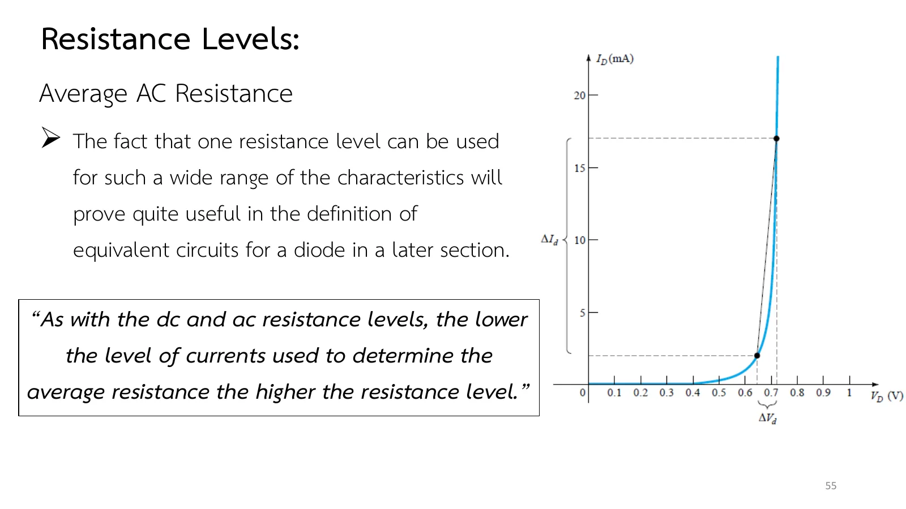

Ask how many ohms a diode has, and the right answer is another question: at which operating point, and with what kind of signal? Its curve is not a straight line, so the same diode resists several times more at a low current than at a high one. This page separates three levels: the dc (static) resistance for an operating point that stays put, the ac (dynamic) resistance for a small signal swinging about that point, and the average ac resistance for a large signal. It compares all three on one graph (section A), works the slides' Ex.1 and Ex.2 (problems 1–2) and the book's average-resistance example (problem 3), and ends with more practice (chapter 1 slides, pp. 45–56; Boylestad section 1.8).
The dc resistance \(R_D = V_D/I_D\) is read at one point of the curve: the reciprocal of the slope of the line from the origin to the operating point, whatever the curve does around it. The higher the current, the lower it is (problem 1).
The ac resistance \(r_d = \Delta V_d/\Delta I_d\) uses the tangent at the Q-point (the quiescent point, the operating point with no signal), with small, equal swings on both sides of Q. The lower the Q-point, the higher \(r_d\); on the steep part it is about \(26\ \text{mV}/I_D\) (problem 2).
The average ac resistance \(r_{av}\) uses the straight line between the lowest and highest points of the signal. One value stands for the diode over the whole range, which is why the equivalent circuits of page 1.6 use it (problem 3).
All three fall as the current rises, and at the same point \(R_D\) is far above \(r_d\), because the line from the origin is always less steep than the tangent (slides pp. 50 and 55; Boylestad, section 1.8).
An ordinary resistor has one value because its graph is a straight line. The diode's graph bends, so its resistance depends on where you ask and with what kind of signal. The simplest question is on slide p. 45: apply a dc voltage and the operating point sits still on the curve, not changing with time; read its \(V_D\) and \(I_D\), divide, and you have the dc resistance \(R_D\).
Table 1.6 on slide p. 56 is the map of the whole page: the dc resistance uses a single point on the curve, the ac resistance the tangent at the Q-point, and the average ac resistance a straight line between the limits of the signal. The simulation below draws all three lines on one graph.
สไลด์หน้า 45: ความต้านทานกระแสตรง · แตะรูปเพื่อขยายSlide p. 45: dc resistance · tap to enlargeสไลด์หน้า 56: ตารางสรุปสามระดับ (ตาราง 1.6) · แตะรูปเพื่อขยายSlide p. 56: the three levels in one table (Table 1.6) · tap to enlarge
Slides pp. 45, 50 and 54 leave out Eqs. (1.4), (1.5) and (1.8): the text ends with "as shown in Figure" or "In equation form" and then a blank. The equations are in the box above (Boylestad, section 1.8); the summary table of slide p. 56 has them all.
The green line comes from slides pp. 49–50: when a small signal rides on the dc, the instantaneous operating point swings up and down about the Q-point, and the tangent at Q tells how much the voltage changes per change of current. That is the ac resistance \(r_d\). The slide stresses that the lower the Q-point, the higher \(r_d\): set \(I_Q\) = 2 mA, then move up to 25 mA, and check.
สไลด์หน้า 49: สัญญาณเล็กแกว่งรอบจุด Q · แตะรูปเพื่อขยายSlide p. 49: a small signal swings about Q · tap to enlargeสไลด์หน้า 50: เส้นสัมผัสที่จุด Q · แตะรูปเพื่อขยายSlide p. 50: the tangent at Q · tap to enlarge
Move the operating current \(I_Q\) and watch three lines on one graph: the pink line from the origin gives \(R_D\), the green tangent gives \(r_d\), and the purple line between the two ends of the signal (\(I_Q \pm\) the amplitude) gives \(r_{av}\). Shrink the amplitude and \(r_{av}\) approaches \(r_d\). The simulation drives a current source with a dc part and a sine wave; hover over the diode to read it at each instant.
ตอนที่ 2 · อ่านจากกราฟจริง
Part 2 · Reading a real curve
ความต้านทานกระแสตรงที่สามจุด
The dc resistance at three points
ตัวอย่างที่ 1 ของสไลด์ (Ex.1 หน้า 46–48) ใช้กราฟของไดโอดซิลิคอนเส้นเดียวถามสามครั้ง: ที่กระแสต่ำ 2 mA ที่กระแสสูง 20 mA และที่ไบแอสกลับ −10 V เส้นประในรูปชี้ไว้แล้วว่าต้องอ่านค่าจากตรงไหน
Ex.1 on slides pp. 46–48 asks the same silicon diode curve three times: at a low current of 2 mA, at a high current of 20 mA, and in reverse bias at −10 V. The dashed lines in the figure already show where to read.
Before opening the solution, rank the three answers from smallest to largest, especially part (c), where the reverse current is down at the microampere level.
สไลด์หน้า 46 (หน้า 47–48 ใช้รูปเดิมกับข้อ b และ c) · แตะรูปเพื่อขยายSlide p. 46 (pp. 47–48 repeat the figure for parts b and c) · tap to enlarge
↓ โจทย์ 1: ใส่คำตอบก่อน แล้วเปิดเฉลยทีละขั้น
↓ Problem 1: type your answers first, then open the solution step by step
1
Ex.1: ความต้านทานกระแสตรงที่ 2 mA, 20 mA และ −10 V
Slides pp. 46–48 · Boylestad Example 1.3 (Fig. 1.24) · the slides give the problem; the solution follows the book
โจทย์
จงหาความต้านทานกระแสตรงของไดโอดตามกราฟในรูปที่ (a) \(I_D = 2\) mA (ระดับต่ำ) (b) \(I_D = 20\) mA (ระดับสูง) (c) \(V_D = -10\) V (ไบแอสกลับ)
Problem
Determine the dc resistance levels for the diode of the figure at (a) \(I_D = 2\) mA (low level), (b) \(I_D = 20\) mA (high level), (c) \(V_D = -10\) V (reverse bias).
The circuit in the picture sets \(I_D\) with a current source for parts (a) and (b), and puts −10 V across the diode for part (c). The solver uses the curve of Fig. 1.24, read off point by point. Try it first.
Ex.2 on slides pp. 51–53 draws two tangents on one curve: one at 2 mA, near the knee, and one at 25 mA, where the curve is steep. Each comes with brackets marking the \(\Delta I_d\) and \(\Delta V_d\) to use.
Part (c) compares them with the dc resistance at the same currents. Guess first which will be larger, and by how much.
สไลด์หน้า 51 (หน้า 52–53 ใช้รูปเดิมกับข้อ b และ c) · แตะรูปเพื่อขยายSlide p. 51 (pp. 52–53 repeat the figure for parts b and c) · tap to enlarge
Slides pp. 51–53 · Boylestad Example 1.4 (Fig. 1.27) · the slides give the problem; the solution follows the book
โจทย์
จากกราฟในรูป (a) จงหาความต้านทานกระแสสลับที่ \(I_D = 2\) mA (b) จงหาความต้านทานกระแสสลับที่ \(I_D = 25\) mA (c) เทียบผลของข้อ (a) และ (b) กับความต้านทานกระแสตรงที่กระแสเดียวกัน
Problem
For the characteristics of the figure: (a) determine the ac resistance at \(I_D = 2\) mA; (b) determine the ac resistance at \(I_D = 25\) mA; (c) compare the results of parts (a) and (b) to the dc resistances at each current level.
The current source has a dc part (the Q-point) and a small sine wave; the white dot on the graph is the operating point at each instant, riding up and down the curve. The green tangents are drawn where the book draws them. Try it first.
When the signal is so large that the operating point travels far, a tangent at one point is not enough. Slide p. 54 therefore draws a straight line between the two points set by the minimum and maximum of the signal; its slope gives the average ac resistance \(r_{av}\).
Slide p. 55 says why this is useful: one value stands for the diode over a wide range, which is the heart of the equivalent circuits of page 1.6. And as with the other two, the lower the currents, the higher \(r_{av}\).
สไลด์หน้า 54: เส้นตรงระหว่างขอบเขตของสัญญาณ · แตะรูปเพื่อขยายSlide p. 54: a straight line between the limits of the signal · tap to enlarge

สไลด์หน้า 55: ค่าเดียวใช้ได้ทั้งช่วง · แตะรูปเพื่อขยายSlide p. 55: one value for the whole range · tap to enlarge
↓ โจทย์ 3: สัญญาณที่แกว่งระหว่าง 2 mA ถึง 17 mA
↓ Problem 3: a signal swinging between 2 mA and 17 mA
In section A set \(I_Q = 2\) mA: the pink line (\(R_D\)) is far less steep than the green one (\(r_d\)), so \(R_D\) is many times \(r_d\).
Move \(I_Q\) up to 25 mA: both fall, but \(r_d\) falls faster.
Keep shrinking the amplitude: the purple line turns towards the green one and \(r_{av}\) approaches \(r_d\). That is why \(r_d\) is defined with a small signal.
Try this 2 — the 26 mV formula
At 25 mA the tangent gives 2 Ω against 26 mV/25 mA = 1.04 Ω; the extra ≈1 Ω is \(r_B\), the body and contact resistance (Eq. 1.7). At 2 mA (the knee) the graph gives about twice \(26\ \text{mV}/I_Q\), which is why the book doubles it there (\(n = 2\)).
In section A move \(I_Q\) above 25 mA and compare \(r_d\) with \(26\ \text{mV}/I_Q\) in the side panel: both fall, but \(r_d\) stays about 1 Ω higher. The simulation continues the curve there with \(r_B = 0.96\ \Omega\).


![Slide 49, Resistance Levels, AC or Dynamic Resistance: the dc resistance of a diode is independent of the shape of the characteristic in the region surrounding the point of interest. The varying input will move the instantaneous operating point up and down a region of the characteristics and thus defines a specific change in current and voltage as shown in the figure: a steep diode characteristic with a tangent line through the Q-point (dc operation), a sine wave beside it marking ΔI_d, and ΔV_d marked below.](slides/ch1/p49.webp)
![Slide 50, Resistance Levels, AC or Dynamic Resistance: a straight line drawn tangent to the curve through the Q-point as shown in the figure will define a particular change in voltage and current that can be used to determine the ac or dynamic resistance for this region of the diode characteristics. A small figure shows the curve, the Q-point, the tangent and the ΔI_d and ΔV_d of a right triangle. Quote: In general, therefore, the lower the Q-point of operation (smaller current or lower voltage) the higher the ac resistance.](slides/ch1/p50.webp)
![Slide 46, Resistance Levels, DC or Static Resistance, Ex.1: determine the dc resistance levels for the diode of the figure at (a) I_D = 2 mA (low level). The figure is a silicon diode characteristic with I_D in mA up to 30, ticks at 2, 10, 20 and 30 mA, V_D ticks at 0.5 and 0.8 V, dashed arrows from 2 mA across to the curve and down to 0.5 V and from 20 mA across and down to 0.8 V, and on the reverse side a point at −10 V on a level marked −1 µA. Slides 47 and 48 repeat the figure with parts (b) I_D = 20 mA (high level) and (c) V_D = −10 V (reverse bias).](slides/ch1/p46.webp)
![Slide 51, Resistance Levels, AC or Dynamic Resistance, Ex.2: for the characteristics of the figure, (a) determine the ac resistance at I_D = 2 mA. The figure is a diode curve with I_D up to 30 mA and V_D from 0 to 1 V in steps of 0.1 V, a black dot at 2 mA with a short tangent, dashed lines at 4 and 2 mA, brackets ΔI_d on the right and ΔV_d under the axis near 0.7 V, and a second black dot at 25 mA with dashed lines at 20 and 30 mA, a bracket ΔI_d and ΔV_d near 0.8 V. Slides 52 and 53 repeat it with (b) the ac resistance at I_D = 25 mA and (c) compare the results of parts (a) and (b) to the dc resistances at each current level.](slides/ch1/p51.webp)